Engine and interface
Startup and the main loop
The game is a 32-bit MFC application. It sets up graphics and a window, then alternates between the main menu and a game. Each turn of the inner loop is one frame, at most 50 per second.
At startup the game reads its command line (server, client, player name, skip intro), creates its working folders and asks Windows for a 1 ms timer. It then loads the graphics library, creates the window and plays the intro movie.
The outer loop is simple: show the main menu, switch the video mode, run the game until the player leaves, free everything, and show the menu again. Closing the window (or Alt+F4) ends the loop and the game exits normally.
The 50 fps cap comes from the original frame limiter. P3R reads it from max_fps in
high_res.ini; max_fps=0 removes the limit.
Where it lives in the code
| File | What is there |
|---|---|
cpp/src/classes/C_QUIT.cpp | InitGameWindow 00463240, RunMainLoop 00463d20, ShutdownGameWindow 00463c60 |
cpp/src/classes/CScreenList.cpp | ScreenListRunFrame 004b8a40 (one frame), ScreenListEndFrame 004b8ff0 |
cpp/src/units/unit_4bbc50.cpp | SglInitialize 004bc680, SglInitOrSwitchScreen 004bccc0, GameClockTick 004bd180 (frame limiter) |
cpp/src/classes/CGameWindow.cpp | CreateMainWindow 004c0a20 |
manual/funzioni/16_9_scene.cpp | the main loop rewritten for P3R: resolution from high_res.ini, clean exit on Alt+F4 |
Engine and interface
Screens and controls
Every screen is a container of controls with a position and a size. A screen list keeps the active screen on top and hands it mouse, keyboard and drawing.
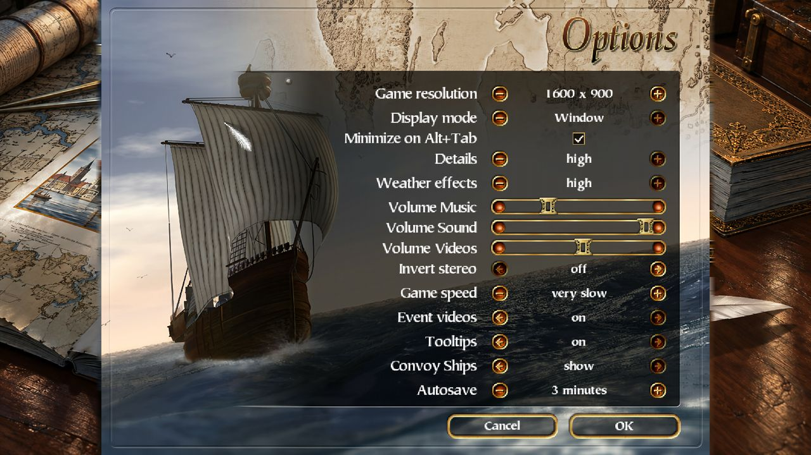
All visible things share one base class, CDrawable: it knows its rectangle, how to draw itself and how
to react to the mouse and the keyboard. A CScreen is a drawable that owns child drawables: buttons,
sliders, list boxes, edit boxes. The main menu, the game view and the Options are all screens.
- Mouse and keys. The window turns Windows messages into game coordinates and passes them to the top screen, which finds the child under the cursor. Key states live in a table with one byte per key.
- Buttons. A click counts only if the button is released over the same button it was pressed on. Buttons can be normal, toggles, or auto-repeat.
- Drawing only what changed. A control that changes marks its rectangle as dirty; the next frame redraws only the dirty rectangles.
Changed in P3R the "Minimize on Alt+Tab" row is new. It is drawn directly with the renderer and catches its own clicks; the original game has no checkbox control.
Where it lives in the code
| File | What is there |
|---|---|
cpp/src/classes/CScreen.cpp | OpenScreen 004b6ce0, Update 004b6e80, ProcessFrame 004b6c70, ScreenHitTestChildren 004b7240 |
cpp/src/classes/CViperButton.cpp | HandleMouse 004c6b90, Draw 004c74c0 |
cpp/src/classes/CViperSlider.cpp | HandleMouse 004cf890 |
cpp/src/classes/CGameWindow.cpp | GameWindowOnMouseMove 004c0d30 |
cpp/src/classes/C_OPTIONS.cpp | the Options screen; settings are stored in P2.CFG |
manual/extra/p3_16_9.cpp | resolution, display mode and the checkbox, stored in high_res.ini |
Engine and interface
Graphics and the Direct3D 11 renderer
The game never draws by itself: it calls 180 functions of a separate graphics library. In P3R that library is a Direct3D 11 renderer, which also adds 16:9 resolutions and the display modes.
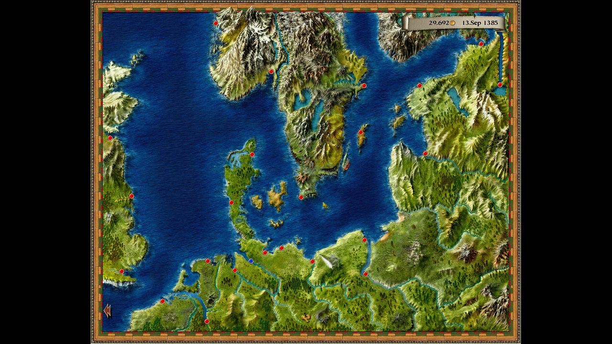
When the game starts it loads ddraw_Dll.dll and looks up 180 functions by name: draw a bitmap,
fill a rectangle, draw text, set a clip region, present the frame. Every picture in the game is a compressed image
inside the game archives; screens load the images they need when they open and release them when they close.
- Settings.
high_res.ininext to the executable sets the resolution, the display mode (window, borderless, full screen), the frame cap, the FPS counter and minimizing on Alt+Tab. It can also save every frame to disk, which is how the screenshots in this guide were taken. - Full screen. Exclusive full screen starts only while the game window is in front, and comes back as soon as you return to it after Alt+Tab.
- 16:9. The game lays out its own screens for wide resolutions; the renderer only stretches the top bar and the right column to the edge.
- Transparency. Parchments and shadows are images without an alpha channel drawn with a constant transparency. The renderer has a blend mode just for this.
Where it lives in the code
| File | What is there |
|---|---|
cpp/src/units/unit_4bad00.cpp | LoadSglLibrary 004bad00 and the small bridge functions to the library |
cpp/src/classes/CSGLFont.cpp | fonts from scripts/fonts.ini |
manual/extra/p3_16_9_layout.cpp | the top bar, the right column and the fast map at 16:9 |
patrizier3_d3d11/src/memory_texture.cpp | the 180 library functions: images, drawing, text |
patrizier3_d3d11/src/presentation.cpp | window, display modes, exclusive full screen, Alt+Tab |
patrizier3_d3d11/src/display_config.cpp | reading high_res.ini |
Engine and interface
Parchments, letters and notifications
Parchments are the windows over the game view: town hall, bank, tavern, shipyard. Letters with a wax seal are small parchments the game uses to tell you about taxes, harvests and missions.
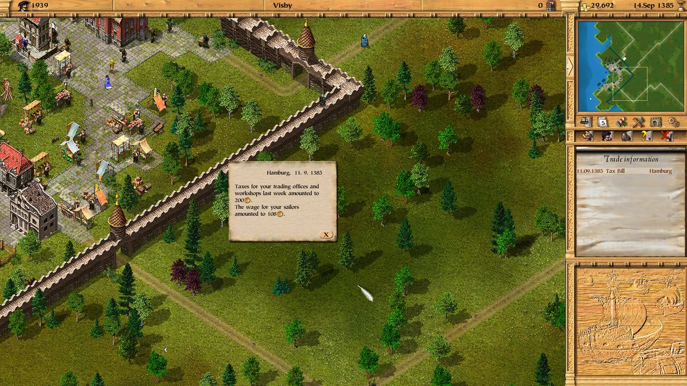
Open parchments sit in a list, the newest on top. A letter is described by eight values: its text, whether it has a frame, its button labels, its seal (the merchant's initials and the town), its scale, and the function to call when it closes.
The chronicle on the right keeps one small record per event. When you click an entry, one large function builds the text of the letter for that kind of event (tax bill, poor harvest, ship finished) and picks its seal and size.
Changed in P3R in the original game the end of that function was a piece of code that read the stack of its parent. Clicking some notifications, for example after a poor harvest, crashed the game. P3R rewrites that part by hand, and the seals and sizes were recovered from the original machine code.
Where it lives in the code
| File | What is there |
|---|---|
cpp/src/classes/CParchmentBase.cpp | CloseAllParchments 00462280, CloseParchment 00462320 |
cpp/src/classes/CDialogParchment.cpp | ShowDialogFromSpec 0041d9b0 (opens a letter), CloseDialogWithResult 0041e680 |
cpp/src/classes/C_SIDEMENU_INFOS.cpp | InfoMenuShowSelectedEntry 0047f3b0 (builds the letter text) |
manual/funzioni/info_lettere.cpp | the rewritten letter code |
cpp/src/classes/CViperMessageBox.cpp | BuildMessageBox 004ceca0 (system message boxes) |
Time and the world
Time and the calendar
The world moves in ticks: 256 ticks make a day and 365 days a year, with no leap years. Every tick runs a small slice of the simulation, so the work of a day is spread evenly over the day.
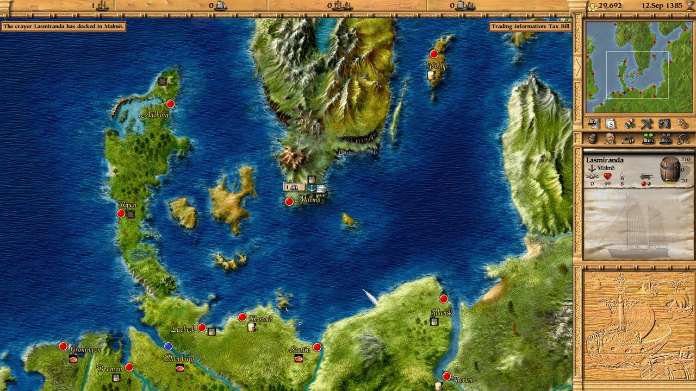
A game starts on 1 March of the chosen year. The game speed sets how many real milliseconds a tick lasts; at one of the slow speeds a tick is 468 ms, about two minutes per day. The clock turns the real time that passed into a number of ticks and sends one "advance time" command; every machine in a network game then runs those ticks one by one, so all of them stay identical.
Some things run on longer cycles through the event queue: random events every 10 days, the trade ranking of towns every 7 days, the yearly change.
Where it lives in the code
| File | What is there |
|---|---|
cpp/src/units/unit_544d64.cpp | NetSessionUpdateGameClock 00546620 (real time to ticks), NetSessionProcessEvents 00546870 |
cpp/src/units/unit_52f550.cpp | WorldStateAdvanceToTime 00530e80 (the tick loop), WorldStateUpdateDateFromTicks 005310d0, WorldStateRunDailyUpkeep 005315c0 |
cpp/src/units/unit_4d3240.cpp | EventQueueProcessDue 004d85c0 |
cpp/src/classes/C_OPTIONS.cpp | SetGameSpeed 00460540 |
Time and the world
Starting a new game
The game settings screen collects your name, home town, starting year, difficulty, goal and speed. The home town is picked by clicking it on the map.
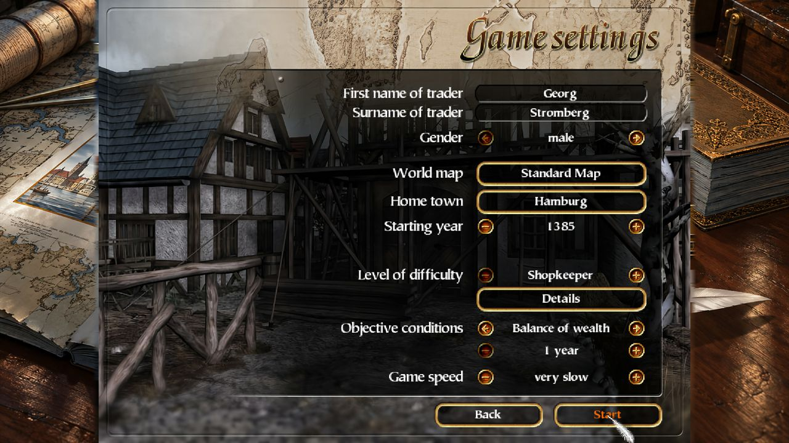
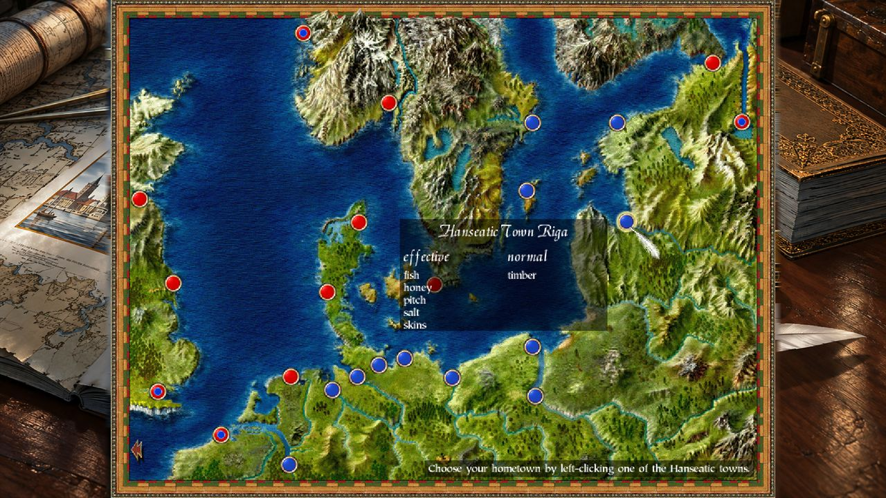
- Choices. Starting year from 1300 to 1400 in steps of 5, five difficulty levels, a goal and its duration, and the game speed. Each difficulty level is a preset of eight smaller settings.
- Home town. Only towns with the Hanseatic flag are accepted.
- Start. The game sends a "new world" command with a random seed and one command per player. Every machine builds the same world from the same seed.
Where it lives in the code
| File | What is there |
|---|---|
cpp/src/classes/C_SPIELEINST.cpp | the game settings screen (German "Spieleinstellungen") |
cpp/src/classes/CHometownSelectScreen.cpp | home town on the map |
cpp/src/units/unit_544d64.cpp | NetQueueGameSetupEvents 00544e50 |
cpp/src/units/unit_52f550.cpp | WorldStateFinishNewGameSetup 00532420 |
Time and the world
Commands, multiplayer and saved games
Nothing you click changes the world directly. Every action becomes a small command, and every machine runs the same commands in the same order. That is what keeps a network game identical everywhere.
- About 190 commands. Set a ship's course, sell goods, buy goods, hire sailors, hire a captain, build, vote in the council, and so on. A few special ones are handled by the session itself: start, save, advance time, leave, change speed.
- Network. One server, up to 8 players. A machine that falls too far behind waits.
- Saved games. Two compressed files: the game state and the statistics. The state is written in sections (world, ships, messages, trade routes, events, battles, names), each closed by a marker so a damaged file is noticed. An autosave is written every 15 minutes by default.
Where it lives in the code
| File | What is there |
|---|---|
cpp/src/units/unit_544d64.cpp | NetSessionPostMessage 0054aa70 (queues a command), NetSessionSaveGameFiles 005472f0, NetSessionLoadGameFiles 005476e0 |
cpp/src/units/unit_535630.cpp | NetExecuteCommand 00535760 (runs a command) and the NetCmd* functions |
cpp/src/units/unit_52f550.cpp | WorldStateSerialize 0052f870, WorldStateDeserialize 0052fb60 |
cpp/src/classes/CLoadSaveGameScreen.cpp | the load and save screen |
Towns
Towns and their people
Each town keeps its stock of every good, its inhabitants in four social classes plus beggars, how satisfied they are, its buildings, its council and its budget. Once a day, in its own tick, a town recomputes all of it.
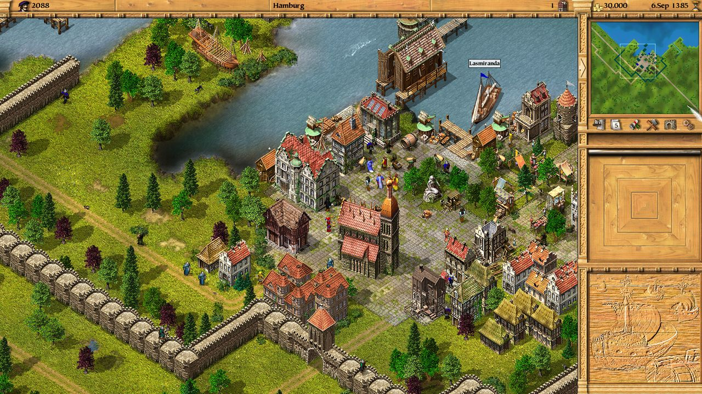
- Housing. Inhabitants live in houses of three sizes (80, 140 and 280 people). The town counts its houses every day.
- Satisfaction. Each class starts from a base value, gains from buildings and ships, loses for every running event (siege, plague, fire, pirates), and gains or loses for every good depending on whether the market has enough of it. The value moves by one or two points a day, never in one jump.
- Events. Plague, siege, blockade, boycott, pirate attack, famine, fire and frozen harbour are flags on the town. A famine starts when the staple food has been missing long enough.
- Taxes. Each week the town collects taxes, weighted by social class.
Where it lives in the code
| File | What is there |
|---|---|
cpp/src/units/unit_5177d0.cpp | TownProcessDailyTick 0051ba10, TownUpdateSatisfaction 0051c830, TownBalancePopulationGroups 0051c650 |
cpp/src/units/unit_51e390.cpp | TownRecalcPopulation 00520bd0, TownUpdateEventState 00525f30 |
cpp/src/classes/CTownStatusIcon.cpp | event icons and their tooltips |
Towns
Production and consumption
Every town has 21 production units that work according to how many workers they have, and its people consume goods according to a table per good and per social class.
A town's daily update runs these steps, in this order:
- switch to winter if the month is before March or after November;
- work out how many workers are needed;
- consumption: every class eats and uses goods from the market;
- production: each of the 21 production units adds its output to the market;
- satisfaction and filling vacant jobs;
- the daily turn of every trading office in the town;
- population classes, housing, and the price thresholds of every good;
- events, and new buildings for towns run by the computer.
- Consumption is the table value for the good and the class, times the inhabitants of that class, divided by 100. In winter two goods are used 20% more. A town never consumes more than it has.
- Production grows with the workers of the unit; the last 8 days are kept for the statistics.
Where it lives in the code
| File | What is there |
|---|---|
cpp/src/units/unit_5177d0.cpp | TownProcessDailyTick 0051ba10 (the daily order above) |
cpp/src/units/unit_50e380.cpp | ProdUnitTick 005101d0 and one function per kind of production unit |
cpp/src/units/unit_527890.cpp | TownConsumeGoodsDaily 00527d40, TownRecalcMarketThresholds 00528070 |
Towns
Buildings and the town view
The town is an isometric map of cells. Each building is a small record in the town, and the town view creates a graphic object for it from its type.
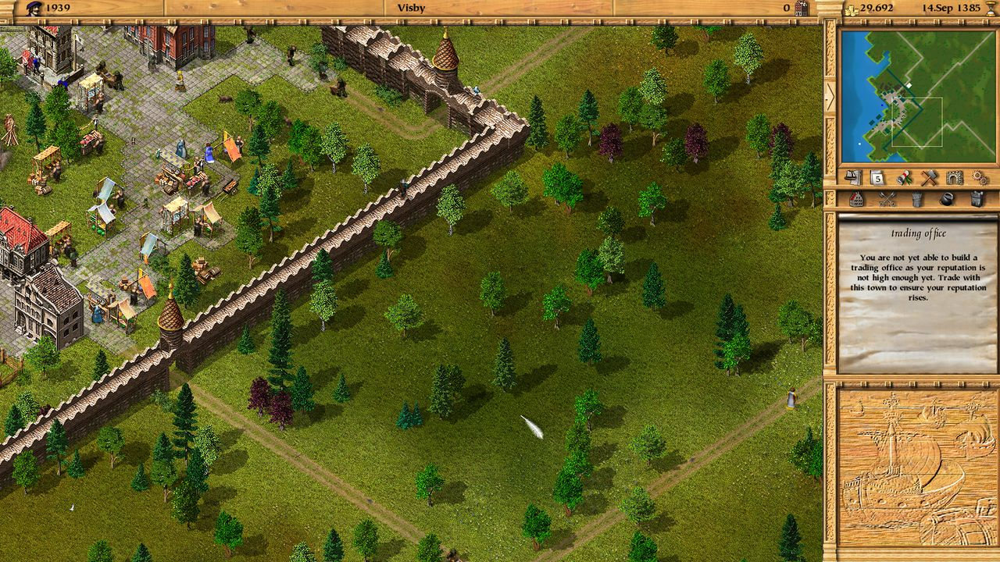
- Can it be built? Every building costs four materials. The game takes what is already on your ships in town and in your trading office; what is missing you pay in gold at market price.
- Rank gate. A trading office needs at least the rank of Trader in that town, which means a reputation of 7 there and 100,000 in assets (see Social rank).
- The view. The town map is a grid of cells with layers; buildings, workshops, people walking, birds and ships in the harbour are animated objects on top.
- Minimap. The small map at the top right is redrawn from the town layers and shows the rectangle you are looking at.
Changed in P3R fixed in P3R: clicking the town minimap used to put the view up and to the left of the click. The cause was a mistake in our own translation, not in the game: the original centres the view on the click (click − half the view); our C build step had turned it into (click − view) / 2.
Where the town's own buildings stand
The town map itself holds only the land: grass, trees, roads, water, quays. Every building, the town hall and the
church included, is placed when a new game starts. Each town reads a second grid,
iso/towns/stadtplatzNN.tow (NN is the number of its town map, see Town maps):
one byte per cell over the same 128 × 226 cells. On it the map designers marked a lot for each of the town's own
buildings, plus a few points in a short header: the town centre, where the city wall starts, the two harbour
buildings.
The new town is then built in one go, in this order:
- The city wall, following a path traced on the grid from its starting point.
- The town's own buildings, from a fixed list: nine in every town, twelve in Hanseatic towns and trading posts. Before each one the town receives the building materials it costs, so a new game does not start with an empty market.
- Houses, one size after another (80, 140 and 280 people, one size per class), each counted as half full, until the class fits: a new town starts with its houses about half occupied.
- Everything is finished at once: no building sites are left when the game begins.
| # | Building | Type | Where it goes |
|---|---|---|---|
| 1 | Market hall | 0x23 | its lot (cell code 0x16) |
| 2 | Town hall | 0x20 | its lot (0x1b) |
| 3 | Weapon smith | 0x03 | its lot (0x1d) |
| 4 | Arsenal | 0x21 | its lot (0x14) |
| 5 | Tavern | 0x24 | its lot (0x17) |
| 6 | Repair dock | 0x01 | a fixed point in the header; the town finishes it at once |
| 7 | Church | 0x1f | its lot (0x19) |
| 8 | Money lender | 0x25 | its lot (0x15) |
| 9 | Gun tower | 0x30 | one of three lots coded 0x1c, picked from the date |
| 10 | Bath house | 0x26 | any free lot of its size, searched from a point in the header |
| 11 | Guild | 0x22 | its lot (0x1a) |
| 12 | Shipyard | 0x2e | another fixed point in the header |
- a town building, numbered as in the table
- a possible lot of the gun tower
- C: the town centre, a cell from the header
0.town, every building on the lot it gets from stadtplatz00.tow, the city wall traced as shown further down. Lübeck is in region 2 (StadtDaten.ini), so it gets that region's town hall, church and wall. Point at a building for its type and lot. The gun tower (9) goes on one of its three dashed lots, chosen from the date, so it is not drawn; the barn (B) is there because Lübeck is one of the two towns on the overland route. Houses and workshops are not drawn: the game adds them on any free lot of their size.- Finding the lot. For each building the game starts from a point (the town centre for most) and searches outward, ring by ring, for a cell whose code matches that building. In all 28 town grids each of these codes appears in exactly one cell, so the church, the town hall and the others always stand on the lot the designers drew, in every game. Workshops and houses search the same way for any free lot of the right size instead.
- The barn (type 0x27, cell code 0x18) has a lot in every grid but is built only in the two towns joined by the overland route, when the world is set up.
Show the numbers
| Building | Lots | Nearest | Median | Farthest | Farthest in |
|---|---|---|---|---|---|
| 1 · Market hall | 28 | 3.2 | 10.6 | 37.4 | map 27 |
| 2 · Town hall | 28 | 5.4 | 11.2 | 29.0 | Groningen (map 21) |
| 3 · Weapon smith | 28 | 6.3 | 15.4 | 32.8 | Luebeck (map 0) |
| 4 · Arsenal | 28 | 6.1 | 17.1 | 63.1 | Ripen (map 22) |
| 5 · Tavern | 28 | 3.6 | 15.1 | 37.7 | Visby (map 2) |
| 6 · Repair dock | 28 | 15.0 | 24.2 | 63.0 | Gdansk (map 5) |
| 7 · Church | 28 | 4.5 | 17.9 | 56.1 | Visby (map 2) |
| 8 · Money lender | 28 | 2.2 | 16.6 | 34.0 | Ripen (map 22) |
| 9 · Gun tower (three lots) | 84 | 5.0 | 23.4 | 69.0 | map 25 |
| 11 · Guild | 28 | 5.7 | 13.8 | 42.1 | Ripen (map 22) |
| 12 · Shipyard | 28 | 15.3 | 28.6 | 53.7 | map 25 |
| B · Barn | 28 | 11.3 | 23.9 | 58.0 | map 24 |
The names of types 0x01, 0x2e and 0x30 come from the pictures they use. The exe's table of building pictures
(0x672fc0) sends them to view types 0x1b, 0x01 and 0x29, and the tiles with those view types are
repwerft (repair dock), werft (shipyard) and geschuetzturm (gun tower). The same
table puts every other building on the picture drawn above.
How the city wall is built
The wall is not in the town map either. The grid marks its course: one cell with code 0x0a every two rows, and gate codes (0x07, 0x08, 0x09) where a road goes through. Starting from the cell named in bytes 8 and 9 of the header, the game follows the marks one node at a time:
- Look two rows ahead. From the current node it checks the four diagonal neighbours two rows away, in the order ↖ ↙ ↗ ↘, skipping the one it came from. Two rows is one piece of wall: every piece covers 2 × 2 cells.
- Go on, or open a gate. A 0x0a cell becomes the next node. A gate code puts a gate of three pieces in that direction, and the trace goes on from the block past it.
- Choose the piece. Each node gets a piece from a 5 × 5 table, by the direction it was reached from and the direction of the next node. When no wall cell lies ahead, the wall ends.
The pieces become town objects: type 0x2e for each node, with the code from the table, and type 0x2f for the three parts of a gate. The picture of each piece depends on that code and on the town's region.
| next cell up-left | next cell up-right | next cell down-right | next cell down-left | no next cell | |
|---|---|---|---|---|---|
| reached moving up-left | 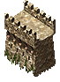 0xe0 straight wall | 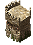 0xc0 corner tower | never: that is the cell it came from | 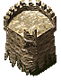 0x00 corner tower | 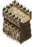 0xe1 end piece |
| reached moving up-right | 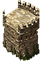 0x40 corner tower | 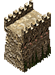 0x20 straight wall | 0x00 corner tower | never: that is the cell it came from | 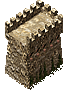 0x21 end piece |
| reached moving down-right | never: that is the cell it came from | 0x80 corner tower | 0xe0 straight wall | 0x40 corner tower | 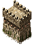 0x61 end piece |
| reached moving down-left | 0x80 corner tower | never: that is the cell it came from | 0xc0 corner tower | 0x20 straight wall | 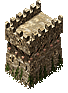 0xa1 end piece |
| the start cell | 0x61 end piece | 0xa1 end piece | 0xe1 end piece | 0x21 end piece | a wall of one piece, not used |
Gate in a wall running ↖↘ 0xe0
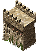
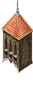
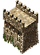
Gate in a wall running ↗↙ 0x20
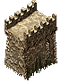
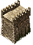
53 / 53 · cell 74, 95: reached moving ↗; no wall cell lies ahead, so the wall ends here with end piece 0x21 (mauerendeno).
- 1 / 53 · cell 52, 51: the start cell from the header. The next wall cell lies ↙, so this end of the wall gets end piece 0x21 (mauerendeno).
- 2 / 53 · cell 51, 53: reached moving ↙, the next wall cell lies ↙: straight on, straight wall 0x20 (mauer2).
- 3 / 53 · cell 50, 55: reached moving ↙, the next wall cell lies ↙: straight on, straight wall 0x20 (mauer2).
- 4 / 53 · cell 49, 57: reached moving ↙, the next wall cell lies ↙: straight on, straight wall 0x20 (mauer2).
- 5 / 53 · cell 48, 59: reached moving ↙, the next wall cell lies ↙: straight on, straight wall 0x20 (mauer2).
- 6 / 53 · cell 47, 61: reached moving ↙, the next wall cell lies ↙: straight on, straight wall 0x20 (mauer2).
- 7 / 53 · cell 44, 67: a gate. Two rows ↙ of the last node the grid has a gate code instead of 0x0a, so the game puts a gate there, three pieces in a row (stadttor_rechts90, stadttor_mitte2, stadttor_links90), and goes on from the block past it.
- 8 / 53 · cell 43, 69: reached moving ↙, the next wall cell lies ↙: straight on, straight wall 0x20 (mauer2).
- 9 / 53 · cell 42, 71: reached moving ↙, the next wall cell lies ↘: a turn, corner tower 0xc0 (eckturm1).
- 10 / 53 · cell 43, 73: reached moving ↘, the next wall cell lies ↘: straight on, straight wall 0xe0 (mauer1).
- 11 / 53 · cell 44, 75: reached moving ↘, the next wall cell lies ↘: straight on, straight wall 0xe0 (mauer1).
- 12 / 53 · cell 45, 77: reached moving ↘, the next wall cell lies ↘: straight on, straight wall 0xe0 (mauer1).
- 13 / 53 · cell 46, 79: reached moving ↘, the next wall cell lies ↙: a turn, corner tower 0x40 (eckturm2).
- 14 / 53 · cell 45, 81: reached moving ↙, the next wall cell lies ↙: straight on, straight wall 0x20 (mauer2).
- 15 / 53 · cell 44, 83: reached moving ↙, the next wall cell lies ↙: straight on, straight wall 0x20 (mauer2).
- 16 / 53 · cell 43, 85: reached moving ↙, the next wall cell lies ↘: a turn, corner tower 0xc0 (eckturm1).
- 17 / 53 · cell 44, 87: reached moving ↘, the next wall cell lies ↙: a turn, corner tower 0x40 (eckturm2).
- 18 / 53 · cell 43, 89: reached moving ↙, the next wall cell lies ↘: a turn, corner tower 0xc0 (eckturm1).
- 19 / 53 · cell 44, 91: reached moving ↘, the next wall cell lies ↘: straight on, straight wall 0xe0 (mauer1).
- 20 / 53 · cell 45, 93: reached moving ↘, the next wall cell lies ↙: a turn, corner tower 0x40 (eckturm2).
- 21 / 53 · cell 44, 95: reached moving ↙, the next wall cell lies ↙: straight on, straight wall 0x20 (mauer2).
- 22 / 53 · cell 43, 97: reached moving ↙, the next wall cell lies ↙: straight on, straight wall 0x20 (mauer2).
- 23 / 53 · cell 42, 99: reached moving ↙, the next wall cell lies ↘: a turn, corner tower 0xc0 (eckturm1).
- 24 / 53 · cell 43, 101: reached moving ↘, the next wall cell lies ↘: straight on, straight wall 0xe0 (mauer1).
- 25 / 53 · cell 44, 103: reached moving ↘, the next wall cell lies ↙: a turn, corner tower 0x40 (eckturm2).
- 26 / 53 · cell 43, 105: reached moving ↙, the next wall cell lies ↘: a turn, corner tower 0xc0 (eckturm1).
- 27 / 53 · cell 44, 107: reached moving ↘, the next wall cell lies ↘: straight on, straight wall 0xe0 (mauer1).
- 28 / 53 · cell 45, 109: reached moving ↘, the next wall cell lies ↘: straight on, straight wall 0xe0 (mauer1).
- 29 / 53 · cell 46, 111: reached moving ↘, the next wall cell lies ↘: straight on, straight wall 0xe0 (mauer1).
- 30 / 53 · cell 49, 117: a gate. Two rows ↘ of the last node the grid has a gate code instead of 0x0a, so the game puts a gate there, three pieces in a row (stadttor_rechts, stadttor_mitte1, stadttor_links), and goes on from the block past it.
- 31 / 53 · cell 50, 119: reached moving ↘, the next wall cell lies ↘: straight on, straight wall 0xe0 (mauer1).
- 32 / 53 · cell 51, 121: reached moving ↘, the next wall cell lies ↘: straight on, straight wall 0xe0 (mauer1).
- 33 / 53 · cell 52, 123: reached moving ↘, the next wall cell lies ↘: straight on, straight wall 0xe0 (mauer1).
- 34 / 53 · cell 53, 125: reached moving ↘, the next wall cell lies ↗: a turn, corner tower 0x80 (eckturm3).
- 35 / 53 · cell 54, 123: reached moving ↗, the next wall cell lies ↗: straight on, straight wall 0x20 (mauer2).
- 36 / 53 · cell 55, 121: reached moving ↗, the next wall cell lies ↘: a turn, corner tower 0x00 (eckturm4).
- 37 / 53 · cell 56, 123: reached moving ↘, the next wall cell lies ↘: straight on, straight wall 0xe0 (mauer1).
- 38 / 53 · cell 57, 125: reached moving ↘, the next wall cell lies ↘: straight on, straight wall 0xe0 (mauer1).
- 39 / 53 · cell 58, 127: reached moving ↘, the next wall cell lies ↗: a turn, corner tower 0x80 (eckturm3).
- 40 / 53 · cell 59, 125: reached moving ↗, the next wall cell lies ↗: straight on, straight wall 0x20 (mauer2).
- 41 / 53 · cell 60, 123: reached moving ↗, the next wall cell lies ↗: straight on, straight wall 0x20 (mauer2).
- 42 / 53 · cell 61, 121: reached moving ↗, the next wall cell lies ↗: straight on, straight wall 0x20 (mauer2).
- 43 / 53 · cell 62, 119: reached moving ↗, the next wall cell lies ↗: straight on, straight wall 0x20 (mauer2).
- 44 / 53 · cell 63, 117: reached moving ↗, the next wall cell lies ↗: straight on, straight wall 0x20 (mauer2).
- 45 / 53 · cell 64, 115: reached moving ↗, the next wall cell lies ↗: straight on, straight wall 0x20 (mauer2).
- 46 / 53 · cell 65, 113: reached moving ↗, the next wall cell lies ↗: straight on, straight wall 0x20 (mauer2).
- 47 / 53 · cell 66, 111: reached moving ↗, the next wall cell lies ↗: straight on, straight wall 0x20 (mauer2).
- 48 / 53 · cell 67, 109: reached moving ↗, the next wall cell lies ↗: straight on, straight wall 0x20 (mauer2).
- 49 / 53 · cell 68, 107: reached moving ↗, the next wall cell lies ↗: straight on, straight wall 0x20 (mauer2).
- 50 / 53 · cell 69, 105: a gate. Two rows ↗ of the last node the grid has a gate code instead of 0x0a, so the game puts a gate there, three pieces in a row (stadttor_rechts90, stadttor_mitte2, stadttor_links90), and goes on from the block past it.
- 51 / 53 · cell 72, 99: reached moving ↗, the next wall cell lies ↗: straight on, straight wall 0x20 (mauer2).
- 52 / 53 · cell 73, 97: reached moving ↗, the next wall cell lies ↗: straight on, straight wall 0x20 (mauer2).
- 53 / 53 · cell 74, 95: reached moving ↗; no wall cell lies ahead, so the wall ends here with end piece 0x21 (mauerendeno).
The grid holds two more rings further out, with their start cells in bytes 10–11 and 12–13 of the header (they are drawn on the whole map in Town maps). A new game builds only the first. A wall order picks its ring from its type (type − 0x36) and traces it in the same way.
Where it lives in the code
| File | What is there |
|---|---|
cpp/src/units/unit_544d64.cpp | TownPlaceInitialBuildings 00545f50 (wall, list, houses), TownInitForNewGame 00545890 |
cpp/src/units/unit_51e390.cpp | TownResetBuildings 0051e8d0 (loads the grid), TownAutoBuild 0051fab0 (starting point and order) |
cpp/src/units/unit_4f56c0.cpp | TownLayoutLoadFromFile 004f9b40, TownLayoutFindNearestCellForBuilding 004f9c80 (the cell code each building needs) |
cpp/src/units/unit_52f550.cpp | WorldStatePlacePairedLandmarks 00533510 (the barns of the overland route) |
cpp/src/units/unit_4f56c0.cpp | TownLayoutTracePathFromEndpoint 004fa1d0 (the wall trace and its table of pieces) |
cpp/src/units/unit_51e390.cpp | TownAddWallMarker 00524140, TownAddWallPieceFromData 005240a0 (wall pieces and gates), TownFillWallOrder 005226c0 (which ring an order builds) |
cpp/src/classes/CTownWallPiece.cpp | CheckWallCellsPlaceable 00582650 (the three blocks of a gate) |
cpp/src/classes/CLightningView.cpp | PickObjectOfType 005928a0 (the picture for a view type and region) |
docs/sito/disegna_citta.py | draws a town with the game's own tiles, strip by strip as the game does; it made the pictures in this section |
cpp/src/units/unit_51e390.cpp | TownCheckCanBuild 0051f3a0, TownPlaceBuilding 00521900, TownAdvanceConstruction 0051ff30 |
cpp/src/classes/CLightningView.cpp | the town view: ShowTown 0058a4f0, LoadTownData 0058eb30, DrawTownCells 00590f30 |
cpp/src/classes/CTownMap.cpp | the town minimap |
cpp/src/classes/C_SIDEMENU_BUILD.cpp | the build menu |
Trade
Prices and the market
A town's price for a good depends on one thing only: how much of it the town has, measured against four stock levels the town recomputes every day from its own needs. There is no supply-and-demand haggling; there is a curve, and every trade slides along it.
Four stock levels per good
Every day, right after its people have consumed and its workshops have produced, each town sets four stock levels for each good, called t0 to t3 here. They are measured in days of the town's own demand, so a big town needs much more of everything before prices drop.
The price curve
Between the levels the price moves in a straight line. There are two curves, one for when the town sells to you and one for when it buys from you:
- Town sells at
- Town buys at
Show the numbers
| Stock (barrels) | Town sells at | Town buys at |
|---|---|---|
| 0 | 139.2 | 69.6 |
| 50 | 109.8 | 62.5 |
| 100 | 80.4 | 55.5 |
| 150 | 52.1 | 48.6 |
| 200 | 49.1 | 46.3 |
| 250 | 46.2 | 43.9 |
| 300 | 43.3 | 41.6 |
| 350 | 40.3 | 39.2 |
| 400 | 37.4 | 36.9 |
| 450 | 34.2 | 33.9 |
| 500 | 29.6 | 27.0 |
| 550 | 26.4 | 22.9 |
| 600 | 24.0 | 20.5 |
| 650 | 21.7 | 18.2 |
| 700 | 20.9 | 17.4 |
| 750 | 20.9 | 17.4 |
| 800 | 20.9 | 17.4 |
- At t1 both curves meet the base price. That is the "normal" price of the good.
- Short supply is expensive. With an empty market a town asks four times the base price and pays up to twice it. The selling cap depends on difficulty: 2.2, 2.0 or 1.8 times.
- A glut has a floor. Past t3 the town still sells at 0.6 and buys at 0.5 of the base price, however much it has.
- The gap is the town's margin. At any stock level the town sells dearer than it buys, so you can never buy and sell back in the same town at a profit. Profit comes from carrying goods from a town with a glut to a town that is short.
| # | Good | Sold by | Base price |
|---|---|---|---|
| 0 | Grain | load | 110.0 |
| 1 | Meat | load | 957.1 |
| 2 | Fish | load | 440.1 |
| 3 | Beer | barrel | 34.8 |
| 4 | Salt | barrel | 28.5 |
| 5 | Honey | barrel | 110.0 |
| 6 | Spices | barrel | 280.0 |
| 7 | Wine | barrel | 220.0 |
| 8 | Cloth | barrel | 206.8 |
| 9 | Skins | barrel | 676.5 |
| 10 | Whale oil | barrel | 82.5 |
| 11 | Timber | load | 55.0 |
| 12 | Iron goods | barrel | 255.6 |
| 13 | Leather | barrel | 224.0 |
| 14 | Wool | load | 880.0 |
| 15 | Pitch | barrel | 55.6 |
| 16 | Pig iron | load | 880.0 |
| 17 | Hemp | load | 440.0 |
| 18 | Pottery | barrel | 171.0 |
| 19 | Bricks | load | 79.8 |
Not verified yet what some town flags mean exactly (they switch the "event" buffers on), and one number from the debug screens. A second price function in the code, with an arithmetic slip, is used only for the cost of extending town walls, not for trading.
Where it lives in the code
| File | What is there |
|---|---|
cpp/src/units/unit_527890.cpp | TownRecalcMarketThresholds 00528070 (the four levels), MarketComputePurchaseCost 0052e430, MarketComputeSaleValue 0052e1d0, MarketSetMaxPriceFactor 0052e1a0, TownConsumeGoodsDaily 00527d40 |
cpp/src/units/unit_5177d0.cpp | TownProcessDailyTick 0051ba10 (runs the levels daily) |
Original data tables | base prices at 0x673A18, barrel or load at 0x672C14, consumption per class at 0x672860 |
Trade
Buying and selling
The trade window does not set a price per barrel: it works out what the whole deal costs as the stock slides along the curve, barrel by barrel. Then it sends a command, and the command moves the goods and the money.
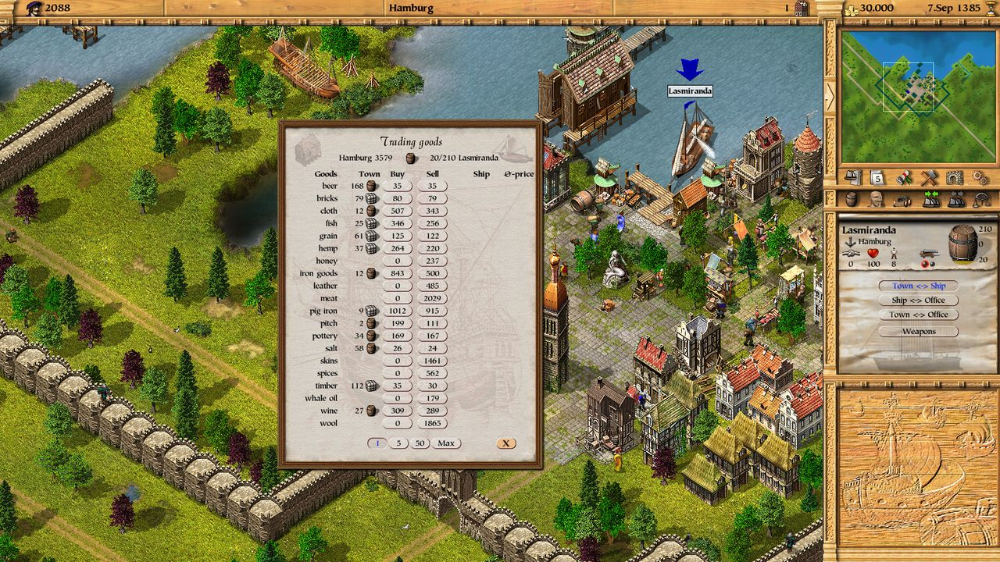
Why the price changes while you buy
Each barrel you take lowers the town's stock, which moves the price up the curve. The game adds up the exact area under the curve for the whole quantity, so buying 5 barrels and then 50 costs exactly the same as buying 55 at once. The price shown in the window is the average for the chosen quantity, not the price of the next barrel.
- Next barrel
- Average paid
Show the numbers
| Barrels bought | Next barrel | Average paid |
|---|---|---|
| 0 | 43.3 | 43.3 |
| 25 | 44.7 | 44.0 |
| 50 | 46.2 | 44.7 |
| 75 | 47.7 | 45.5 |
| 100 | 49.1 | 46.2 |
| 125 | 50.6 | 46.9 |
| 150 | 52.1 | 47.7 |
| 175 | 65.7 | 49.2 |
| 200 | 80.4 | 52.2 |
| 225 | 95.1 | 56.1 |
| 250 | 109.8 | 60.8 |
| 275 | 124.5 | 65.9 |
| Town stock | Deal | Total | Per barrel |
|---|---|---|---|
| 300 barrels | buy 5 | 217 | 43.4 |
| 295 barrels | then buy 50 | 2,250 | 45.0 |
| 300 barrels | sell 50 | 2,019 | 40.4 |
| 100 barrels | buy 5 | 409 | 81.8 |
| 95 barrels | then buy 50 | 4,901 | 98.0 |
| 100 barrels | sell 50 | 2,597 | 51.9 |
The rules around a deal
- Quantities. 1, 5, 50 or the maximum (keys 1 to 4). Goods move in whole barrels or loads; amounts are rounded down.
- You can't buy what isn't there. A purchase stops at the town's stock and at the free space in the hold. A town with less than one barrel left sells nothing.
- Not enough money? The game finds the largest quantity you can afford instead of refusing.
- Mission goods. When a town has an open mission about a good, buying that good costs 15% more.
- Selling has no limit. A town buys everything you offer; it just pays less for each extra barrel.
What a sale really changes
The window never edits the world itself: it sends command 1 (sell) or 2 (buy), and the command runs the same way on every machine in a network game. Buying needs the ship to be docked in that town.
Trade and reputation
Selling a good the town is short of raises your trade standing there; buying a good the town is short of lowers it. Only the part of the deal that fills (or deepens) the shortage counts:
- Selling: if the stock was below t1, the barrels up to t1 count. Each class of citizens weighs the good differently (beer matters to the wealthy and the poor, wine to the rich, grain most to the poor), and the result is divided by the town's population, so the same gift counts more in a small town.
- Buying: only below half of t1, and it subtracts the same way.
- Emergencies count double. Bringing grain to a starving town counts twice; during sieges, plague and similar events every good counts 1.5 times.
- Difficulty scales all of it: 1.3, 1.0 or 0.7.
In the example above, buying at a stock of 300 changes nothing (the town still has more than half of t1), while selling 50 barrels to the town at 100 barrels adds about 0.42 to your trade standing. See Reputation for how standing turns into rank.
Where it lives in the code
| File | What is there |
|---|---|
cpp/src/classes/CTradeParchment.cpp | OpenTrade 004a9690, TradeParchmentHandleClicks 004a8cf0, TradeParchmentComputeUnitPrices 004aac00 |
cpp/src/units/unit_535630.cpp | NetCmdSellGoodsToTown 00537340 (command 1), NetCmdBuyGoodsFromTown 00537450 (command 2) |
cpp/src/units/unit_527890.cpp | MarketFindAffordableQuantity 0052f3e0 |
cpp/src/units/unit_5177d0.cpp | ShipAddCargoWithTotalCost 00517fe0 (average price of the cargo) |
cpp/src/units/unit_4f56c0.cpp | MerchantRecordGoodsSoldToTown 004f8690, MerchantRecordGoodsBoughtFromTown 004f8840 |
Trade
Trading offices and automatic trade
A trading office can trade on its own every day, and a ship can follow a list of stops, buying and selling at each one. Both use the same price curve, run backwards: "at what stock would this price be reached?"
The office administrator
For every good you set a target stock and a price limit: a minimum price to sell at, or a maximum price to buy at. Every day the administrator:
- buys up to the target, but only the barrels the town can sell below your maximum price. It buys only if the whole amount is affordable. A skilled administrator gets up to 10% off.
- sells what is above the target, but only as much as the town will take before its price drops under your minimum.
Trade routes
A route is a list of stops. At each stop the ship first sells, then buys, good by good in the order you set:
- Selling stops at your quantity limit, at the cargo on board, or when the town's price would fall under your limit.
- Buying stops at your quantity, at the free hold, or when the price would rise over your limit; the captain's skill gives a discount.
- A price of zero moves goods between the ship and your office in that town instead of the market.
- A ship needs a captain to follow a route, and goes to repair by itself below 90% hull. Routes can be saved to
save\AutoRouteand loaded on other ships.
Where it lives in the code
| File | What is there |
|---|---|
cpp/src/units/unit_4fbba0.cpp | KontorDailyUpdate 004fff20, KontorAutoTradeToTargets 004ff780 |
cpp/src/units/unit_527890.cpp | the inverse curves: stock at which a price is reached (0052ea80, 0052ec50) |
cpp/src/units/unit_4d3240.cpp | RouteProcessShipAtStop 004d5200, RouteAdvanceShipToNextStop 004d5900, RouteSaveToFile 004d5c50 |
cpp/src/classes/CTradingOfficeParchment.cpp | the trading office window |
cpp/src/classes/CAutoTradeParchment.cpp | the trade route window |
Reputation and career
Reputation
Every merchant has a separate reputation in each town. It is rebuilt from scratch every day: part of it comes from what you own and employ there, part from three remembered accounts that you fill with deeds and trade.
What you own
- Wealth helps everywhere: up to 5 points from the size of your fleet and up to 5 from your total assets (cash, cargo at market value, ships, offices), added in every town.
- Presence helps locally: 0.01 per worker in your businesses there, and 0.003 per tenant in your offices, counted fully at the lowest rent and not at all at the highest.
- The harbour guard ship of a town, if it is yours, is worth a flat point there.
What you have done
Three remembered accounts are kept per town:
- Permanent (never fades): building a mint or a school (+1), a hospital or chapel where the town lacks one (+1), a well where water is short (+0.1), being the first to discover an expedition destination in the Mediterranean (+0.5 in every town).
- Favour (fades 1% a day): joining the guild (+1), a feast (up to +1.5, or −1 if the table is bare), donations to the church, bank loans, ships ordered or repaired at the town's shipyard. Penalties: a demolished building (−1), a failed bribe (−2), being involved in an attack on the town (−3), infractions (−1 to −8).
- Trade (fades 1% a day): selling goods the town is short of, minus buying goods it is short of. See Buying and selling for the exact rule.
- Reputation in town
- Needed for Trader
Show the numbers
| Day | Reputation |
|---|---|
| 0 | 4.38 |
| 15 | 6.67 |
| 30 | 6.35 |
| 45 | 6.07 |
| 60 | 5.84 |
| 75 | 5.63 |
| 90 | 5.46 |
| 105 | 5.30 |
| 120 | 5.17 |
Difficulty
Almost every gain is multiplied by the reputation factor of the difficulty level: 1.3 (easy), 1.0 (normal), 0.7 (hard). Computer merchants start at 1.0; a few chosen at the start get 2.0 and keep adjusting it to stay close to the best human player.
Two more numbers
- Total reputation adds up the trade parts in all towns and the permanent and favour parts in the Hanseatic towns. It decides the alderman election and starts the Hanseatic missions (a mayor with a total over 120).
- Underworld standing is separate: dealings with smugglers and pirates raise it, defeating pirate convoys lowers it, and it drifts back to neutral every day. The profile page says "the underworld is avoiding you", "your name is being mentioned" or "regards you as one of their own".
Changed in P3R a bug in the original game, kept as is: the profile page warns that your reputation is "not sufficient" below 5, 7.5, 10, 15 and 25, but the real promotion thresholds are 7, 12, 20, 40 and 60.
Where it lives in the code
| File | What is there |
|---|---|
cpp/src/units/unit_4f56c0.cpp | MerchantUpdateDaily 004f7bb0 (the daily rebuild), MerchantComputeTotalReputation 004f73d0, MerchantRecordGoodsSoldToTown 004f8690, MerchantSetReputationFactor 004f9550 |
cpp/src/units/unit_4e8804.cpp | MerchantAddReputation 004f36e0 (underworld standing), MerchantGetReputationLevel 004f36c0 |
cpp/src/units/unit_51e390.cpp | TownPlaceBuilding 00521900 (permanent gains from buildings) |
cpp/src/units/unit_4d9080.cpp | feasts and other events |
cpp/src/classes/CTradingOfficeParchment.cpp | the profile page (UpdateProfileTab 005dd670) |
Reputation and career
Social rank and offices
Rank is kept per town, from Shopkeeper to Patrician. You climb one step at a time when your reputation in that town and your total assets both pass a threshold; the last two steps, Lord Mayor and Alderman, are elections.
- When it is checked. In your home town on the first day of each month; in other towns two at a time, a few every day. If your reputation is enough but your assets are not, the game sends you a hint in your home town.
- No demotion. Once reached, a rank stays, even if your reputation falls. Only a former mayor or alderman steps back down.
What rank unlocks
| Needs | Unlocks |
|---|---|
| Trader in that town | building a trading office there (the mayor is exempt) |
| Councillor | the council chamber of the town hall and its votes; the prince's emissary |
| Patrician, home town | standing for Lord Mayor |
| Lord Mayor | the town's budget, the army officer and the mercenaries |
| Hanseatic missions done | standing for Alderman |
Elections
- Lord Mayor, every year. Four candidates: computer candidates with ratings 59, 65, 70 and 80, and any merchant who lives in the town, is a guild member, has rank Patrician and a reputation above 59. 120 votes are shared out in proportion to the ratings; each councillor you have bribed brings 3 votes for you. Without bribes you need a reputation above 80 to beat the strongest rival.
- Council votes weigh by rank: 1 vote up to Councillor, 2 for Patrician and Mayor, 3 for the Alderman, plus one per bribed councillor. A bribe costs about 8,000 to 15,000 gold at the start and more as you rise.
- Alderman, every year, among the incumbent, the Hanseatic towns' mayors and merchants who completed at least four Hanseatic missions, scored by total reputation.
Money and reputation
- Guild fee: 20,000 at home or 30,000 elsewhere, plus up to 60,000 depending on your assets, minus up to 15,000 for good reputation.
- Loans: the interest falls by one per mille for every 3 points of reputation, up to 30.
Where it lives in the code
| File | What is there |
|---|---|
cpp/src/units/unit_4f56c0.cpp | MerchantUpdateTownRank 004f75f0 (promotions), MerchantPostPromotionRequest 004f7510 |
cpp/src/units/unit_527890.cpp | TownRankMayorCandidates 00528cf0, TownHoldMayorElection 00528e60, HanseCollectConferenceCandidates 00529700 |
cpp/src/units/unit_4d9080.cpp | EventHandleAldermanElection 004dbbd0 |
cpp/src/units/unit_535630.cpp | NetCmdBuyCouncilSeat 0053ac50, NetCmdCastCouncilVote 0053b0d0 |
cpp/src/classes/C_SIDEMENU_BUILD.cpp | FillBuildMenuChoiceList 0047ab20 (the trading office gate) |
cpp/src/classes/CTownHallParchment.cpp | the town hall: council, elections, Hanse |
Reputation and career
Missions and events
The world keeps a queue of events sorted by due time. Some are missions given to a merchant, some are random events, some are steps of a campaign script.
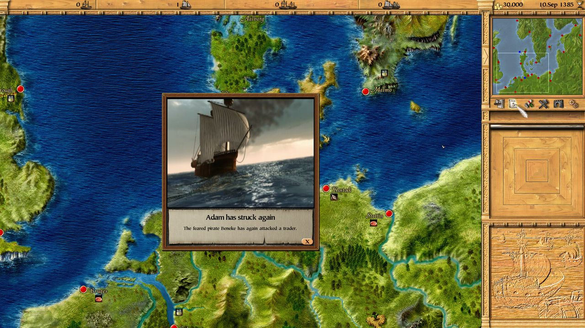
- The queue also carries payments, auctions and deliveries: anything that must happen at a given time.
- Hanseatic missions start once a merchant is a mayor with a total reputation over 120: found a town, link two towns, deliver a ship, defeat a pirate fleet, bring a town's stock to a level.
- Campaigns are scripts in
scripts/missions_eng.ini. - Events reach you as chronicle letters, as messages at the top of the screen, or as a window with a video like the one above.
Where it lives in the code
| File | What is there |
|---|---|
cpp/src/units/unit_4d3240.cpp | EventQueueProcessDue 004d85c0 |
cpp/src/units/unit_52f550.cpp | WorldStateScheduleStoryEvents 005326e0, WorldStateCheckEventCondition 00532c50 |
cpp/src/units/unit_4e8804.cpp | MissionCheckShipTarget 004ec864 |
cpp/src/classes/CMissionScriptCache.cpp | campaign scripts |
Ships and the sea
Ships and convoys
Every ship has its owner, class, cargo, crew, hull and position. Ships can sail together as a convoy: only the lead ship actually moves and the others follow it.
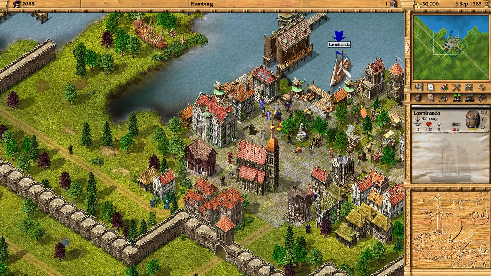
- Classes. Snaikka, crayer, cog and hulk, each with its own cargo space, speed and minimum crew. The hull can be upgraded twice; each upgrade adds hull points and takes some cargo space.
- Crew. The maximum crew grows with cargo space and hull upgrades, and is never less than 20. A ship leaves port only with enough sailors, a hull above zero and no overload.
- Hiring. Sailors come from the town's pool of seafarers; how many you can hire also depends on how the town sees you.
- Shipyard. Builds, repairs and upgrades ships. An order takes materials from the town market and 20 workers. Ships on an automatic route go to repair by themselves below 90% hull.
Known bug the "Hire sailors" window in the tavern does not show the number of sailors to hire.
Where it lives in the code
| File | What is there |
|---|---|
cpp/src/units/unit_5177d0.cpp | ShipGetMaxCrew 005185c0, ShipIsReadyToDepart 00519ba0, TownShipyardQueueOrder 0051d4c0 |
cpp/src/units/unit_535630.cpp | NetCmdHireSailors 00537c20, NetCmdHireCaptain 00537ee0 |
cpp/src/classes/CSideMenu_Ship.cpp | the ship panel and its tabs |
cpp/src/classes/CTavernParchment.cpp | the tavern: sailors and captains |
cpp/src/classes/CShipyardParchment.cpp | the shipyard |
Ships and the sea
Sea battles and pirates
When two hostile ships get close a fight starts. If no human is involved it is resolved without a view; otherwise the real-time battle opens, with cannons, ramming, boarding and escape.
- Contact. Every ship keeps up to two nearby targets. When a pursuer gets close enough, a battle slot is taken and both convoys switch to battle.
- The fight. Ships, cannonballs, collisions and rams are simulated each tick; wind matters. Harbour battles use a water and land grid.
- The end. The report says which ships sank, were captured, plundered or fled. A captured prize is chosen with a chance that grows with its hull.
- Pirates. Five pirate nests, each with a level from 0 to 3. Every day they add ships and change their orders; their raids reach you as news.
Where it lives in the code
| File | What is there |
|---|---|
cpp/src/units/unit_503ac0.cpp | ShipTableStartBattleBetweenShips 0050b250, ShipTableUpdateNearbyTargets 0050d2b0 |
cpp/src/classes/CSeaBattle.cpp | UpdateBattle 00606cc0, TryStartBoarding 00609ba0, EndBattle 0060d299 |
cpp/src/units/unit_511920.cpp | pirate fleets |
File formats
Saved games (.pat and .pst)
A saved game is two files: .pat holds the whole state of the world, .pst the history behind the statistics screens. Both are compressed with the game's own LZ scheme and have no checksum.
The stream inside a .pat
The example below is a real save from a test game: 23 July 1345, 24 towns, 37 merchants, 128 ships. It takes 192 KB on disk and 947 KB once unpacked. Almost all of it is the towns:
| Offset | Size | Type | Meaning |
|---|---|---|---|
| 0x00 | 4 | u32 | magic 0xAFFE and format version (0x85 in the shipped game) |
| 0x04 | 76 | struct | game settings: start year, game speed, mode, difficulty factors, date, home town and its name, display options |
| 0x50 | 12 | 3 × u32 | session words (game-speed intervals) |
| 0x5C | 4 | u32 | section marker 0xAFFE |
| 0x60 | … | struct | world: date, game time, town count, then each town, the distance matrix, offices, merchants, history |
| Offset | Size | Type | Meaning |
|---|---|---|---|
| 0 | 4 | i32 | greater than 0: compressed, unpacked size = value & 0x3FFFFFFF; 0 or less: stored as is |
| 4 | … | bits | read 1 bit at a time: 0 = one literal byte; 1 = copy from earlier output (3-bit distance class, then length) |
- Folders.
Save\Einsingle game,Save\Kamcampaign,Save\Mehrmultiplayer; mission starting points live inside the game archive. - Versions. The settings block grew over time; the loader reads 40, 60 or 76 bytes depending on the version in the header, so older saves still load.
- .pst starts with 0xAFFE000B and holds four lists of town statistics and one history per merchant, separated by 0xAFFEAFFE.
Where it lives in the code
| File | What is there |
|---|---|
cpp/src/units/unit_544d64.cpp | NetSessionSaveGameFiles 005472f0, NetSessionLoadGameFiles 005476e0, NetSerializeGameState 00549cc0, NetReadSaveGameHeader 00547be0 |
cpp/src/classes/CLzCodec.cpp | LzCompressBuffer 0054c410 and the matching decompressor |
cpp/src/units/unit_52f550.cpp | WorldStateSerialize 0052f870, WorldStateDeserialize 0052fb60 |
cpp/src/units/unit_5177d0.cpp | TownSaveToBuffer 0051b330 (one town) |
cpp/src/units/unit_54c4c0.cpp | StatisticsHistoryWrite 0054d870 (.pst) |
File formats
Town maps (.town and .let)
Every town view is drawn from a .town file: a grid of 128 × 226 diamond cells in two layers, ground and objects. Each cell points to a tile described by a small .let file.
- wall ring 1 (53 nodes)
- wall ring 2 (107 nodes)
- wall ring 3 (193 nodes)
0.town, all 128 × 226 cells, drawn with the game's own tiles in its staggered rows: the map is a plain rectangle, sea at the top, the harbour bay, the town square, roads out to the fields. The town is shown as a new game builds it. The lines are the three wall rings in stadtplatz00.tow: a new game builds ring 1; rings 2 and 3 wait for the town to grow.| Offset | Size | Type | Meaning |
|---|---|---|---|
| 0 | 2 | u16 | magic, not checked |
| 2 | 4 | u32 | columns (128) |
| 6 | 4 | u32 | rows (226) |
| 10 | 115,712 | cells | layer 0: ground, every cell filled |
| 115,722 | 115,712 | cells | layer 1: objects (about 2,200 cells used) |
| end − 16 | 16 | 4 × u32 | starting view: column and row |
| Offset | Size | Type | Meaning |
|---|---|---|---|
| 0x02 | 2 | u16 | tile id, the number the cells refer to |
| 0x04 | 1 | u8 | view type: what the tile shows; the exe picks a building’s picture by this number |
| 0x08 | 4 | colour | transparent colour (magenta) |
| 0x0C | 16 | 4 × u32 | rectangle of the tile inside its image (34 × 21 for a ground tile) |
| 0x1C | 8 | 2 × u32 | footprint: columns (up-left) and rows (up-right) |
| 0x24 | 4 + 4n | u32, n × u32 | n extra values: region style, code of a wall piece, part of a gate… |
| then | 16 each | 4 × u32 | columns + rows − 1 strips: the rectangle each cell of the footprint draws |
| then | 4 + n | string | path of the image, e.g. images\module_stadtkarte/wasser_neu.aim |
Next to each map sit smaller files: .locked (where you may build, one byte per cell), .spawn
(where people appear), .nodes (walking paths) and the town-square grid stadtplatzNN.tow, which
says where the town's buildings go (see Buildings and the town view).
| Offset | Size | Type | Meaning |
|---|---|---|---|
| 0 | 4 | u32 | 128, as in the .town file |
| 4 | 4 | u32 | 226 |
| 8 | 8 | 4 cells | start cells of the city wall rings; 0xff 0xff for an unused one |
| 16 | 72 | cells, values | more marked cells, in blocks of 8, 16, 32 and 16 bytes (not described here) |
| 88 | 2 | cell | town centre: most searches for a lot start here |
| 90 | 4 | 2 cells | not identified yet |
| 94 | 2 | cell | where the search for the bath house starts |
| 96 | 2 | cell | shipyard (type 0x2e) |
| 98 | 2 | cell | repair dock (type 0x01) |
| 100 | 28,928 | u8 per cell | the grid, 128 × 226: the low 6 bits are the lot code (0x1b town hall, 0x19 church, …) |
- Grid size: 128 and 226 (bytes 0–7)
- Start cells of the city wall rings (three here, the fourth unused) (bytes 8–15)
- Other marked cells and values, not described here (bytes 16–87)
- Town centre (bytes 88–89)
- Not identified yet (bytes 90–93)
- Where the search for the bath house starts (bytes 94–95)
- Harbour buildings: shipyard, then repair dock (bytes 96–99)
- must be 1
- must be 0
- not checked
If a town has no grid of its own, stadtplatz00.tow is used.
Where it lives in the code
| File | What is there |
|---|---|
cpp/src/classes/CLightningView.cpp | LoadTownMapLayers 0058e8c0, LoadTownData 0058eb30, DrawTownCells 00590f30 |
cpp/src/units/unit_4f56c0.cpp | TownLayoutLoadFromFile 004f9b40, TownLayoutReadFromBuffer 004f9770 (the town-square grid) |
docs/sito/disegna_citta.py | draws a .town map with the game's tiles, strip by strip as DrawTownCells does |
File formats
The world map (.gmf and StadtDaten.ini)
A scenario file lists which towns exist, what kind they are and what they produce. Where they sit on the sea map comes from a separate text file.
| Offset | Size | Type | Meaning |
|---|---|---|---|
| 0 | 4 | u32 | number of towns N (24) |
| 4 | 2 + n | u16 + text | marker 0xAFFE, then a short description |
| … | 4 N | u32[N] | goods each town produces efficiently (one bit per good) |
| … | 4 N | u32[N] | goods it produces normally |
| … | N | u8[N] | kind: 0x20 town, 0x40 Hanseatic town, 0x80 trading post (London, Bruges, Bergen, Novgorod) |
| … | N | u8[N] | which of the 40 locations it uses |
| … | N | u8[N] | which .town map it uses |
| … | 40 strings | text | the town names, Edinburgh to Novgorod |
- Positions come from
scripts\StadtDaten.ini, one section per location, in sea map pixels (Lübeck's harbour approach is at 975, 1312). - The editor's project file,
.kef, carries the same data uncompressed; the game never reads it. - The last two tables match the world header of a saved game byte for byte, so a save remembers which scenario it came from.
Where it lives in the code
| File | What is there |
|---|---|
cpp/src/units/unit_53e7c0.cpp | GmfRosterLoad 005448a0, GmfRosterSave 00544b80 |
cpp/src/classes/CMapSelectScreen.cpp | the scenario list and its descriptions |
cpp/src/units/unit_51e390.cpp | Town_InitFromStadtDaten 0051e440 (positions) |
File formats
Trade routes (.rou)
A saved trade route is just its list of stops, 220 bytes each, compressed. The same records sit inside a saved game.
| Offset | Size | Type | Meaning |
|---|---|---|---|
| 0x00 | 2 | u16 | index of the next stop |
| 0x02 | 1 | u8 | town (0xFF = not set) |
| 0x03 | 1 | u8 | flags: 0x04 marks the first stop of the round, where profit is reported |
| 0x04 | 24 | u8[24] | the order in which goods are handled (0x18 or more = skip) |
| 0x1C | 96 | i32[24] | price limit per good |
| 0x7C | 96 | i32[24] | quantity per good; with a price of 0 and a negative quantity, unload to the office |
Files go to save\AutoRoute\<name>.rou. Saving starts from the first stop and clears the links; loading
checks that the size is a whole number of stops and links them back into a ring.
Where it lives in the code
| File | What is there |
|---|---|
cpp/src/units/unit_4d3240.cpp | RouteSaveToFile 004d5c50, RouteLoadFromFile 004d5ee0, RouteProcessShipAtStop 004d5200 |
File formats
Archives and images (.cpr and .aim)
Almost every asset lives inside one archive, p2arch0_eng.cpr: 6,485 files, of which 3,409 are .aim images. A file on disk with the same name wins over the archive.
| Offset | Size | Type | Meaning |
|---|---|---|---|
| 0 | 32 | text | "ASCARON_ARCHIVE V0.9", padded |
| 0x20 | 4096 | block | directory block: size, used bytes, entry count, data size, then entries |
| entry | 12 + n | u32 × 3 + name | absolute offset, size, flags (1), file name with backslashes |
| … | … | data | the files of this block, stored as they are; the next block follows |
| Offset | Size | Type | Meaning |
|---|---|---|---|
| 0 | 4 | text | "AIM" and a zero byte |
| 4 | 1 | u8 | version (3) |
| 5 | 4 | u32 | file length − 4 |
| 9 | 32 | text | image name |
| 0x29 | 5 + n | chunk | type (34 compressed indexed, 22 raw BGR, others rarer) and length, then the pixels |
Images decode to 32-bit colour, 8-bit indexed with a 256-colour palette, or 24-bit colour. Magenta is the
transparent colour. The renderer decodes them with the game's own AIM.dll.
Not verified yet the pixel layout of the rarer chunk types (33, 26, 30).
Where it lives in the code
| File | What is there |
|---|---|
Archiver.dll, AIM.dll | the game's own libraries, used as they are |
patrizier3_d3d11/src/memory_texture.cpp | loading and decoding images for the renderer |
About this rebuild
Crash log and unreachable code
P3R writes a report when it crashes, and every time it runs code that the original game never reaches.
- Crashes. A text report and a minidump in the
crashfolder next to the executable, with function names and the call chain, then a message box. - Unreachable code. 222 probes sit in functions the original game never calls. If one fires, its
name is written to
crash\irraggiungibile.txt: that function deserves a look. - Rebuilding. One script rebuilds everything, from the generated code to the executable, and a second one proves function by function that renaming did not change the machine code.
Where it lives in the code
| File | What is there |
|---|---|
manual/extra/p3_crashlog.cpp | crash reports and probes |
tools/ricompila.py | the full rebuild |
tools/obj_compare.py | machine code comparison |